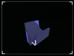
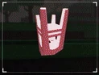
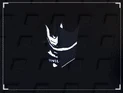
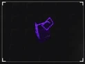
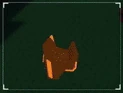
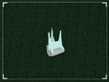

Sinopse

O jogo Sols-RNG pode ser compendido como uma experiência centrada na mecânica de azar e probabilidade,
em que o jogador busca obter auras e poderes raros a partir de giros aleatórios.
Essa estrutura faz parte de um gênero crescente dentro do Roblox que explora o fascínio humano pela
aleatoriedade controlada,
semelhante a sistemas de loot boxes presentes em jogos comerciais.
Do ponto de vista psicológico, Sols-RNG se apoia no reforço intermitente,
um conceito da psicologia comportamental que mantém os jogadores engajados,
já que a cada giro existe a possibilidade — mesmo que pequena — de conquistar uma aura rara.
Essa incerteza cria um ciclo de expectativa, frustração e euforia,
que aumenta o tempo de permanência no jogo.
Além disso, o design visual das auras e os efeitos cósmicos funcionam como gatilhos de recompensa
sensorial,
intensificando a sensação de progresso e conquista.
O jogo, portanto, não depende apenas da sorte, mas também da percepção subjetiva de valor,
onde a raridade se transforma em status dentro da comunidade de jogadores.
Assim, Sols-RNG pode ser interpretado como uma metáfora digital para a busca incessante de recompensas
improváveis,
unindo elementos de sorte, estética e interação social —
uma fórmula que o torna viciante e culturalmente relevante dentro da plataforma Roblox.
Auras


As auras representam não apenas efeitos visuais, mas também a expressão máxima da progressão dentro de
Sols-RNG.
Cada aura é resultado direto da mecânica de sorte (RNG – Random Number Generator),
o que lhes confere um caráter de raridade e exclusividade.
Do ponto de vista estético, as auras são construídas para transmitir identidade e status.
Jogadores com auras raras tornam-se referências dentro do servidor,
funcionando como símbolos de prestígio social e reconhecimento comunitário.
Nesse sentido, a aura não é apenas um item cosmético:
ela é um marcador de valor dentro da lógica cultural do jogo.
Sob a perspectiva psicológica, as auras exploram a ideia de reforço positivo.
O brilho, as cores dinâmicas e os efeitos cósmicos desencadeiam sensações de conquista e pertencimento.
Quanto mais rara a aura, maior o impacto emocional,
reforçando o ciclo de engajamento do jogador.


Cutscene
Quando o jogador consegue uma nova aura em Sols-RNG, o jogo não apenas informa o feito —
ele celebra o momento através de uma animação vibrante, carregada de luzes, efeitos sonoros e
partículas.
Esse instante cria uma sensação de clímax emocional,
funcionando como a “explosão” de recompensa após a espera e a incerteza do giro.
A animação traz expectativa: o jogador percebe que “algo diferente” está acontecendo.
Esse atraso entre a ação (girar) e o resultado (receber a aura) aumenta a tensão emocional
e prepara a mente para uma recompensa de alto valor.
As cores intensas, os brilhos cósmicos e o som de triunfo funcionam como gatilhos sensoriais
que ativam áreas do cérebro ligadas ao prazer e à vitória.
É o mesmo mecanismo que faz fogos de artifício em celebrações despertarem euforia coletiva.
Além da satisfação individual, existe o efeito comunitário:
outros jogadores no servidor percebem a conquista.
Isso reforça a sensação de status e pertencimento,
já que o novo portador da aura se destaca visualmente.
Outras atividades
Obby

Há pelo menos dois cursos de obstáculos no mapa: um na “Sol’s Island” e outro na Caverna.
Quando você completa esses obbys, ganha um bônus de sorte temporário (por exemplo +30% de Luck por 60
segundos) que ajuda nos rolls.
Fishing


É possível pescar a partir de certas partes do mapa costeiras.
Há vários tipos de peixes para coletar
(alguns mais raros ou mutações raras) e esses peixes podem ser vendidos para NPCs, gerando uma moeda
específica de pesca.
Quests

O jogo tem um quadro de missões (“Quest Board”) onde é possível pegar missões de diferentes níveis (nível 1 a 5), com recompensas variadas.
Crafting
-
Equipamentos:
-
Poções:
-
Aura Crafting:
Que aumentam Luck ou diminuem o cooldown de rolagem. Exemplos: luvas, dispositivos que melhoram sua performance ao rolar.
     Que dão bônus temporários como aumento de sorte ou aceleração no cooldown. Algumas são comuns, outras mais poderosas, craftadas com ingredientes ou auras.

onde você pode “melhorar” ou criar versões alternativas ou upgrade de auras.
Boss Raids
Há pelo menos um chefe (“The Crawler”, o Sandworm) acessível via um portal de Boss Raids. Derrotar esse chefe dá recompensas especiais como XP e poções.
Eventos
O jogo ocasionalmente introduz biomas novos com Auras exclusivas, eventos sazonais, lojas de itens/eventos especiais, e mecânicas temporárias como Treasure Hunts.
Pass RNG

O Pass no Sol’s RNG (geralmente chamado de Season Pass ou Premium Pass) é um sistema de recompensas por
níveis que dá aos jogadores benefícios conforme eles vão subindo de nível (“Pass XP”).
Ele funciona por temporadas (Season I, Season II, etc.), ou seja, há um tempo limitado onde o Pass está
ativo. Fora desse tempo, você não consegue mais reivindicar as recompensas daquela temporada.
O Pass do Sols' RNG pode dar diversas recompensas para o jogador, recompensas como:
Final
Sols-RNG se configura como uma experiência digital que vai além do simples entretenimento:
ele combina aleatoriedade, estética e interação social para criar um ciclo de engajamento intenso.
A mecânica de RNG, central ao jogo, não apenas desafia a sorte do jogador,
mas também explora profundamente o prazer psicológico da incerteza e da conquista.
As auras, com seus efeitos visuais e simbólicos, funcionam como marcadores de prestígio,
reforçando a dimensão social e competitiva dentro da comunidade.
Cada nova aura obtida, especialmente através da animação cuidadosamente projetada,
gera um impacto emocional significativo,
transformando um simples prêmio virtual em um momento de clímax pessoal e reconhecimento coletivo.
Do ponto de vista lúdico, o jogo demonstra como a interatividade digital e o design de recompensas
podem ser utilizados para criar experiências memoráveis,
mesmo em ambientes relativamente simples como o Roblox.
Ao explorar estética, emoção e status, Sols-RNG não apenas entretém,
mas também evidencia princípios de psicologia comportamental aplicados a jogos,
como o reforço intermitente e a valorização da raridade.
Em suma, Sols-RNG é um exemplo de como a combinação de sorte, estética e engajamento social
pode resultar em um jogo viciante e culturalmente relevante dentro da plataforma Roblox,
oferecendo ao jogador tanto emoção imediata quanto uma narrativa pessoal de conquista e reconhecimento.